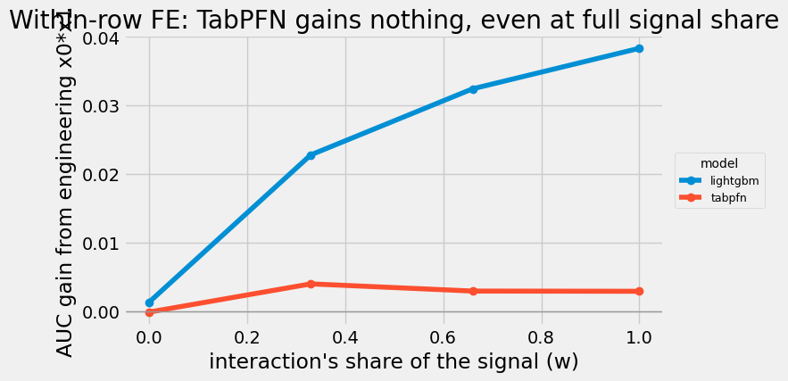
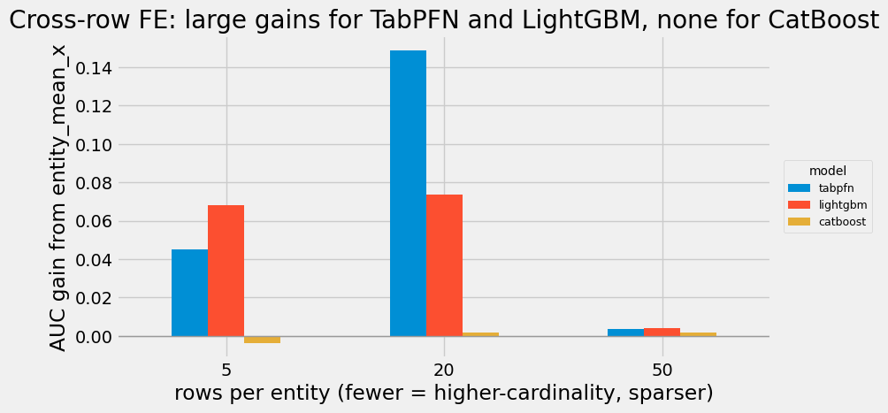
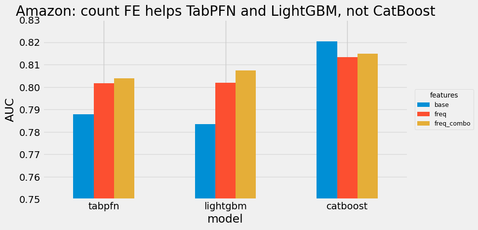

A practical split between within-row features TabPFN can recover and cross-row aggregates it still needs.
Feature engineering is the lever a gradient-boosting practitioner trusts most: hand-craft the features that let the model see structure it cannot learn on its own. The question for a pretrained model is whether that lever still works. The answer is not “no” and not “yes”. It splits cleanly along one line: features computed from a single row versus features computed across rows.
Within-row (a row’s own values): interactions x1*x2, ratios x1/x2, polynomials, binning.
Cross-row (statistics over many rows): group-by aggregates, count and frequency encodings, target encoding, entity aggregates (“this card’s average transaction”).
That second family is not a new TabPFN idea. It is the old Kaggle feature-engineering playbook: per-client aggregates in Home Credit, per-value frequency features in Santander, and UID or count features in IEEE-CIS fraud. Recent systems such as AutoGluon and the June 2026 TabPrep paper help name and automate parts of this playbook, but the intuition comes from practice the reader has probably seen before.
We will see that TabPFN recovers the first family for free and genuinely needs the second, the opposite of the lazy take that “TabPFN does not need feature engineering.” Every experiment is a small synthetic construction plus one real dataset. Everything here is the local tabpfn 8.0.3 package.
Show code
import warningswarnings.filterwarnings("ignore")import numpy as npimport pandas as pdimport matplotlib.pyplot as pltplt.style.use("fivethirtyeight")from tqdm import tqdmfrom tabulate import tabulatefrom sklearn.metrics import roc_auc_scorefrom sklearn.linear_model import LogisticRegressionfrom sklearn.preprocessing import StandardScalerfrom sklearn.pipeline import Pipelinefrom sklearn.datasets import fetch_openmlfrom lightgbm import LGBMClassifierfrom catboost import CatBoostClassifierfrom tabpfn import TabPFNClassifierdef printdf(df, nrows=10, showindex=True):"""Print a small dataframe as an aligned text table."""print(tabulate(df.head(nrows), headers="keys", tablefmt="psql", showindex=showindex))def sigmoid(z):"""Convert a log-odds score into a probability."""return1.0/ (1.0+ np.exp(-z))def standardize(values):"""Put a vector on mean 0 and standard deviation 1."""return (values - values.mean()) / (values.std() +1e-9)def score(model_name, X_train, y_train, X_test, y_test, seed=0, cat_cols=()):"""Fit one model and return test ROC AUC. The experiments pass categorical columns in the form each model expects: raw values for TabPFN, pandas category dtype for LightGBM, and strings plus explicit categorical-column indices for CatBoost. """ train_features = X_train.copy() test_features = X_test.copy()if model_name =="lightgbm":for column in cat_cols: train_features[column] = train_features[column].astype("category") test_features[column] = pd.Categorical( test_features[column], categories=train_features[column].cat.categories, ) model = LGBMClassifier(verbose=-1, random_state=seed)elif model_name =="catboost":for column in cat_cols: train_features[column] = train_features[column].astype(str) test_features[column] = test_features[column].astype(str) categorical_indices = [train_features.columns.get_loc(column) for column in cat_cols] model = CatBoostClassifier( verbose=0, random_state=seed, cat_features=categorical_indices orNone, )elif model_name =="logreg": model = Pipeline([ ("scale", StandardScaler()), ("lr", LogisticRegression(max_iter=2000)), ])else: model = TabPFNClassifier(random_state=seed) model.fit(train_features, y_train) probabilities = model.predict_proba(test_features)[:, 1]return roc_auc_score(y_test, probabilities)
Feature-engineering checklist
Start with the checklist a strong Kaggle notebook would use, not with a paper taxonomy.
Within-row. Arithmetic of a row’s own columns: x1*x2, x1/x2, age*hours, polynomial terms. The classic reason to do it: a linear model cannot form a product, and a shallow tree forms it only clumsily, so you hand it the feature directly.
Cross-row. A statistic computed by scanning many rows: the mean of a numeric within a category, how often a value occurs (count / frequency), the out-of-fold target mean for a category, the average transaction for a card. You cannot compute any of these from one row alone; you need a groupby.
AutoGluon and TabPrep use related feature-generator language, but they should be supporting references, not assumed background. For this chapter, the reader only needs the split above: inside one row versus across many rows.
TabPFN treatment
TabPFN is a transformer. Within a row it attends across the features, so it can form products and interactions internally; a within-row engineered feature mostly recomputes something it already has. But each prediction attends to the training rows as context; it does not pool an entity’s other rows into an aggregate the way a groupby does. So a cross-row feature is information it cannot assemble for itself.
That predicts the chapter: within-row FE should be redundant for TabPFN, cross-row FE should help it. The next three experiments measure exactly that.
Experiment map
Each experiment cell follows the same map:
Build the smallest dataset that isolates one feature-engineering idea.
Add exactly one engineered feature, computed only from the training side when it scans rows.
Fit the same small model roster with and without that feature.
Report gain versus the raw baseline, because that is the quantity the chapter cares about.
The helper functions below are just there to keep those four steps repeatable. The important object is not the helper itself, it is the contrast: what signal was unavailable before the engineered feature, and which models can recover it without being handed the feature explicitly?
Within-row features
The test is deliberately demanding. We make the target depend on an interaction x0*x1, and we dial how much of the signal that interaction carries (its variance share w, from 0 to 1, with the rest coming from a plain linear main effect). Then we measure the AUC gain from handing each model the explicit x0*x1. If TabPFN learns interactions internally, its gain should stay near zero no matter how important the interaction is.
Show code
def make_within_row(w, n=4000, n_noise=10, signal=2.6, seed=0):"""Create a dataset where `x0 * x1` carries a controlled share of the signal. `w` is the interaction's variance share. When `w=1`, the interaction is the whole target signal. When `w=0`, the target is only a linear main effect. """ rng = np.random.RandomState(seed) raw_features = rng.normal(size=(n, 5)) main_effect = standardize(1.5* raw_features[:, 2] + raw_features[:, 3] - raw_features[:, 4] ) interaction = standardize(raw_features[:, 0] * raw_features[:, 1]) logit = signal * ( np.sqrt(1- w) * main_effect + np.sqrt(w) * interaction ) y = (rng.random(n) < sigmoid(logit)).astype(int) base = pd.DataFrame(raw_features, columns=[f"x{i}"for i inrange(5)])for noise_index inrange(n_noise): base[f"z{noise_index}"] = rng.normal(size=n) engineered_interaction = pd.Series( raw_features[:, 0] * raw_features[:, 1], name="x0_x1", )return base, engineered_interaction, ySHARES = [0.0, 0.33, 0.66, 1.0]SEEDS = [0, 1, 2]MODELS = ["logreg", "lightgbm", "tabpfn"]rows = []for signal_share in tqdm(SHARES, desc="signal share"):for seed in SEEDS: base, engineered_interaction, y = make_within_row(signal_share, seed=seed) split_at =len(y) //2 feature_sets = {"without": base,"with_FE": pd.concat([base, engineered_interaction], axis=1), }for label, features in feature_sets.items(): X_train = features.iloc[:split_at] X_test = features.iloc[split_at:] y_train = y[:split_at] y_test = y[split_at:]for model_name in MODELS: auc = score(model_name, X_train, y_train, X_test, y_test, seed) rows.append({"w": signal_share,"seed": seed,"model": model_name,"label": label,"auc": auc, })within = pd.DataFrame(rows)g = within.pivot_table(index=["model", "w"], columns="label", values="auc").reset_index()g["gain"] = g["with_FE"] - g["without"]print("AUC gain from adding the explicit interaction x0*x1, by model and signal share w:")gain_table = g.pivot_table(index="w", columns="model", values="gain")printdf(gain_table[["logreg", "lightgbm", "tabpfn"]].round(4))
signal share: 100%|██████████| 4/4 [01:10<00:00, 17.52s/it]
AUC gain from adding the explicit interaction x0*x1, by model and signal share w:
+------+----------+------------+----------+
| w | logreg | lightgbm | tabpfn |
|------+----------+------------+----------|
| 0 | -0.0003 | 0.0013 | -0.0002 |
| 0.33 | 0.0701 | 0.0228 | 0.004 |
| 0.66 | 0.141 | 0.0324 | 0.0029 |
| 1 | 0.3332 | 0.0383 | 0.0029 |
+------+----------+------------+----------+
AUC gain from adding the explicit interaction x0*x1, by model and signal share w:
+------+----------+------------+----------+
| w | logreg | lightgbm | tabpfn |
|------+----------+------------+----------|
| 0 | -0.0003 | 0.0013 | -0.0002 |
| 0.33 | 0.0701 | 0.0228 | 0.004 |
| 0.66 | 0.141 | 0.0324 | 0.0029 |
| 1 | 0.3332 | 0.0383 | 0.0029 |
+------+----------+------------+----------+
Show code
gain = g.pivot_table(index="w", columns="model", values="gain")fig, ax = plt.subplots(figsize=(8.5, 4.5))for model in ["lightgbm", "tabpfn"]: ax.plot(gain.index, gain[model].values, marker="o", label=model)ax.axhline(0, color="0.6", lw=1)ax.set_xlabel("interaction's share of the signal (w)")ax.set_ylabel("AUC gain from engineering x0*x1")ax.set_title("Within-row FE: TabPFN gains nothing, even at full signal share")ax.legend(loc="center left", bbox_to_anchor=(1.01, 0.5), title="model", fontsize=9, title_fontsize=10)fig.tight_layout()plt.show()

Two things to read. LightGBM’s gain climbs as the interaction matters more (it does not fully form x0*x1 among the noise features), reaching about +0.04 when the interaction is the whole target. TabPFN’s gain stays flat near zero at every share: it recovers the interaction from x0 and x1 via attention regardless of how important it is. LogReg (in the table) gains hugely, up to +0.3, because a linear model cannot form a product at all.
This is why within-row FE looks dead on real data: a hand-crafted ratio is only one weak contributor there, and even at maximum importance it buys TabPFN nothing. The mechanism section makes that precise.
Cross-row features
Now a feature that requires scanning rows. We build entities, each appearing several times. Each entity has a latent quality; the target depends on it. A single row sees only a noisy x; the entity’s quality is the average of x over the entity’s rows, a groupby mean.
The leakage boundary matters here. The engineered entity_mean_x is learned from the training rows and then mapped into the test rows. If an entity is unseen in training, the helper uses the training global mean. That is the real deployment shape of a cross-row aggregate.
Show code
def make_cross_row(n_entities, rows_per, x_noise=2.0, seed=0):"""Create repeated entities whose average `x` is predictive of the target.""" rng = np.random.RandomState(seed) entity_quality = rng.normal(size=n_entities) entity = np.repeat(np.arange(n_entities), rows_per) rng.shuffle(entity) x = entity_quality[entity] + rng.normal(0, x_noise, len(entity)) y = (rng.random(len(entity)) < sigmoid(2.0* entity_quality[entity])).astype(int) df = pd.DataFrame({"x": x, "entity": entity.astype(str)})for noise_index inrange(3): df[f"z{noise_index}"] = rng.normal(size=len(entity))return df, ydef add_entity_mean(train, test):"""Add a train-only group mean of `x` for each entity.""" entity_mean = train.groupby("entity")["x"].mean() global_mean =float(train["x"].mean()) train_with_feature = train.copy() test_with_feature = test.copy() train_with_feature["entity_mean_x"] = ( train["entity"].map(entity_mean).fillna(global_mean).values ) test_with_feature["entity_mean_x"] = ( test["entity"].map(entity_mean).fillna(global_mean).values )return train_with_feature, test_with_featureTOTAL_ROWS =6000ROWS_PER_ENTITY = [5, 20, 50]SEEDS = [0, 1, 2]MODELS = ["tabpfn", "lightgbm", "catboost"]rows = []for rows_per in tqdm(ROWS_PER_ENTITY, desc="rows per entity"): n_entities = TOTAL_ROWS // rows_perfor seed in SEEDS: df, y = make_cross_row(n_entities, rows_per, seed=seed) split_at =len(y) //2 train = df.iloc[:split_at].reset_index(drop=True) test = df.iloc[split_at:].reset_index(drop=True) y_train = y[:split_at] y_test = y[split_at:] train_with_feature, test_with_feature = add_entity_mean(train, test)for model_name in MODELS: auc_without = score( model_name, train, y_train, test, y_test, seed, cat_cols=["entity"], ) auc_with_feature = score( model_name, train_with_feature, y_train, test_with_feature, y_test, seed, cat_cols=["entity"], ) rows.append({"rows_per": rows_per,"n_entities": n_entities,"seed": seed,"model": model_name,"gain": auc_with_feature - auc_without, })cross = pd.DataFrame(rows)print("AUC gain from adding entity_mean_x, by model and rows-per-entity:")cross_gain_table = cross.pivot_table(index="rows_per", columns="model", values="gain")printdf(cross_gain_table[["tabpfn", "lightgbm", "catboost"]].round(4))
rows per entity: 0%| | 0/3 [00:00<?, ?it/s]
rows per entity: 33%|████████████▋ | 1/3 [00:35<01:10, 35.35s/it]
rows per entity: 67%|█████████████████████████▎ | 2/3 [01:07<00:33, 33.25s/it]
rows per entity: 100%|██████████████████████████████████████| 3/3 [01:38<00:00, 32.28s/it]
rows per entity: 100%|██████████████████████████████████████| 3/3 [01:38<00:00, 32.76s/it]
AUC gain from adding entity_mean_x, by model and rows-per-entity:
+------------+----------+------------+------------+
| rows_per | tabpfn | lightgbm | catboost |
|------------+----------+------------+------------|
| 5 | 0.045 | 0.0679 | -0.0038 |
| 20 | 0.1489 | 0.0736 | 0.0015 |
| 50 | 0.0035 | 0.0039 | 0.0016 |
+------------+----------+------------+------------+
Show code
piv = cross.pivot_table(index="rows_per", columns="model", values="gain")[["tabpfn", "lightgbm", "catboost"]]ax = piv.plot(kind="bar", figsize=(8.5, 4.5))ax.axhline(0, color="0.6", lw=1)ax.set_xlabel("rows per entity (fewer = higher-cardinality, sparser)")ax.set_ylabel("AUC gain from entity_mean_x")ax.set_title("Cross-row FE: large gains for TabPFN and LightGBM, none for CatBoost")ax.legend(title="model", loc="center left", bbox_to_anchor=(1.01, 0.5), fontsize=9, title_fontsize=10)plt.xticks(rotation=0)plt.show()

The opposite picture. When entities are high-cardinality and sparsely observed, the engineered aggregate gives large gains to both TabPFN and LightGBM, because neither can pool an entity’s rows from a single observation. TabPFN’s gain peaks at about +0.15 in the moderate-cardinality regime (20 rows per entity), well above LightGBM; at the most extreme sparsity (5 rows per entity, 1,200 entities) the two are comparable. The gain vanishes when entities are well sampled (50 rows each, only 120 entities): there both models recover the entity effect from the id itself, so the aggregate is redundant.
And CatBoost gains nothing throughout, because its native ordered target statistics already encode the entity from its id, the same shortcut that made CatBoost special in the categoricals chapter, and the one shortcut TabPFN lacks. So the cross-row gain is real, conditional on the aggregate carrying signal the id alone does not.
Real data check
Synthetic constructions can be engineered to make a point, so here is the real version. Amazon Employee Access is nine high-cardinality id columns (RESOURCE has ~7,500 values) and a binary approval target. This is the kind of table where old Kaggle feature engineering often starts with counts: “how common is this id?” and “how often do these two ids appear together?”
Those counts are pure cross-row features. We add single-column frequency counts and a small set of combination counts, computed from the training rows only, and measure the gain per model.
bars = amz.loc[["tabpfn", "lightgbm", "catboost"], ["base", "freq", "freq_combo"]]ax = bars.plot(kind="bar", figsize=(8.5, 4.5))ax.set_ylim(0.75, 0.83)ax.set_ylabel("AUC")ax.set_axisbelow(True); ax.grid(axis="y", alpha=0.6)ax.set_title("Amazon: count FE helps TabPFN and LightGBM, not CatBoost")ax.legend(title="features", loc="center left", bbox_to_anchor=(1.01, 0.5), fontsize=9, title_fontsize=10)plt.xticks(rotation=0)plt.show()

The synthetic split holds on real data. TabPFN gains about +0.014 from frequency and +0.016 from combination counts, real lift from features it cannot compute per row. LightGBM gains the most (about +0.024). And CatBoost loses a little, because its native target statistics already encode the ids, so raw counts are redundant noise. The same three-way pattern as the synthetic entity test.
Why the split holds
Every result above is the same quantity: the gain from an engineered feature equals its incremental predictiveness given what the model already recovers from the raw inputs. A feature helps only when it carries signal the model cannot reconstruct on its own.
Within-row features (products, ratios): TabPFN reconstructs them with cross-feature attention, so the incremental term is ~0 for it at any importance. A linear model reconstructs nothing, so it is FE-hungry. Trees sit in between.
Cross-row features (aggregates): TabPFN cannot reconstruct them per prediction, so the incremental term is large, unless the cross-row effect is already learnable from a low-cardinality, well-sampled id (then it reconstructs it and the term collapses), or a model has a native shortcut (CatBoost’s ordered target statistics).
We can see the “incremental predictiveness” directly on a real within-row ratio. On Taiwan credit, the classic utilization ratio is bill amount divided by credit limit:
Show code
credit = fetch_openml(name="default-of-credit-card-clients", as_frame=True)Xc = credit.data.astype(float).reset_index(drop=True)ifstr(credit.target.dtype) in ("object", "category"): yc = credit.target.astype(str).isin(["1", "yes"]).astype(int).valueselse: yc = credit.target.astype(int).valuesutilization = (Xc["x12"] / Xc["x1"]).rename("utilization")rng = np.random.RandomState(0)n =12000sampled_rows = rng.permutation(len(Xc))[:n]split_at = n //2Xs = Xc.iloc[sampled_rows].reset_index(drop=True)ys = yc[sampled_rows]u = utilization.iloc[sampled_rows].reset_index(drop=True)def lgbm_auc(features):"""Fit LightGBM on the first half and score AUC on the second half.""" model = LGBMClassifier(verbose=-1) model.fit(features.iloc[:split_at], ys[:split_at]) probabilities = model.predict_proba(features.iloc[split_at:])[:, 1]return roc_auc_score(ys[split_at:], probabilities)feature_sets = {"utilization ALONE": u.to_frame(),"its components {limit, bill}": Xs[["x1", "x12"]],"components + utilization": pd.concat([Xs[["x1", "x12"]], u], axis=1),"all 23 raw columns": Xs,"all 23 + utilization": pd.concat([Xs, u], axis=1),}print("Taiwan credit, LightGBM AUC by feature set (the incremental value of the ratio):")for name, features in feature_sets.items():print(f" {name:32}{lgbm_auc(features):.4f}")
Taiwan credit, LightGBM AUC by feature set (the incremental value of the ratio):
utilization ALONE 0.5686
its components {limit, bill} 0.6147
components + utilization 0.6164
all 23 raw columns 0.7618
all 23 + utilization 0.7687
The ratio scores only 0.569 alone, adds about +0.002 over its own components (the model recovers it from limit and bill), and about +0.007 against the full 0.76 model. Tiny incremental signal, so it helps no model much, TabPFN included. A cross-row count on Amazon, by contrast, carries signal no single row holds, so it helps the models that cannot compute it.
This is also the old Kaggle lesson. In Will Koehrsen’s Home Credit manual feature-engineering notebook, the central move is aggregating auxiliary tables back to each client. In Chris Deotte’s Santander notebook, the “magic” feature is a per-value frequency count. In his IEEE-CIS fraud notebook, UID and count-style features are part of the 0.96 XGBoost story. Those are different competitions, but the same shape: useful information is spread across rows, then summarized into a feature a row-level model can consume.
TabPFN benefits from precisely this family, and often more than a tuned GBM.
Honest limits
The dramatic synthetic gains (entity aggregates up to +0.16) need the aggregate to carry most of the signal; on real data with strong existing features the gains are smaller (Amazon +0.016) but in the same direction.
The cross-row gain is conditional: it requires high-cardinality, sparsely-observed entities. Well sampled, low-cardinality ids are recovered from the id alone and the aggregate adds nothing.
CatBoost is the standing exception via native target statistics.
AutoGluon and TabPrep are useful references, but they should not be load-bearing prerequisites for this chapter. The reader should understand the result from the within-row versus cross-row split alone.
All models run on default hyperparameters.
Takeaways
For TabPFN the feature-engineering question is not whether, it is what:
Within-row features (interactions, ratios, polynomials) are redundant: attention forms them, even when they are the entire signal. Stop reflexively adding products and ratios.
Cross-row features (group-by aggregates, counts, frequency and target encoding, entity statistics) are where engineering earns its keep, because TabPFN cannot compute them per prediction. This is the feature-engineering family behind many strong Kaggle notebooks.
The single rule: engineer the features your model cannot reconstruct from your data. For TabPFN, that usually means cross-row, not within-row.